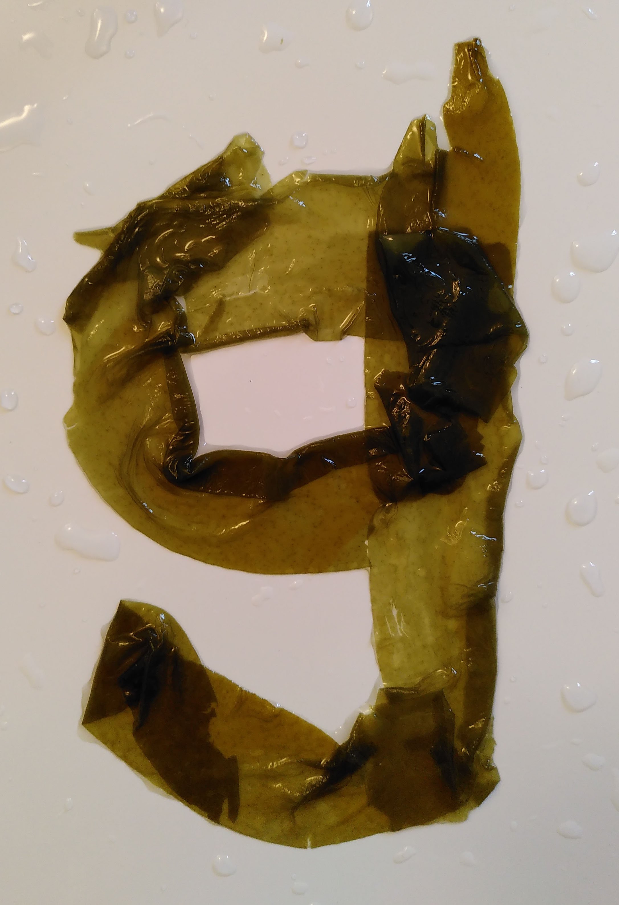
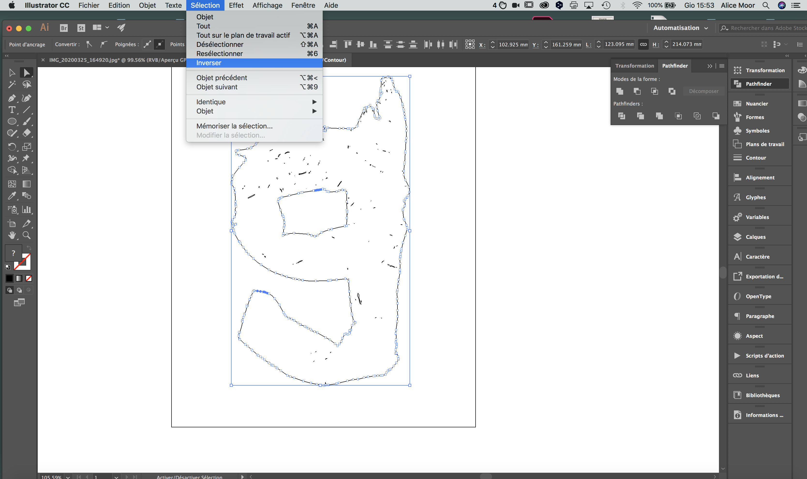
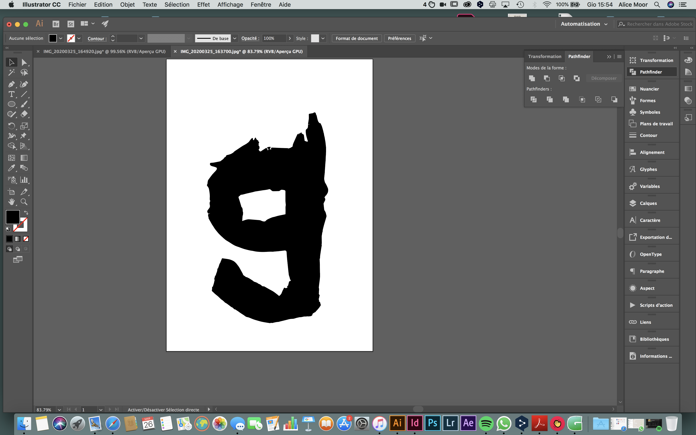
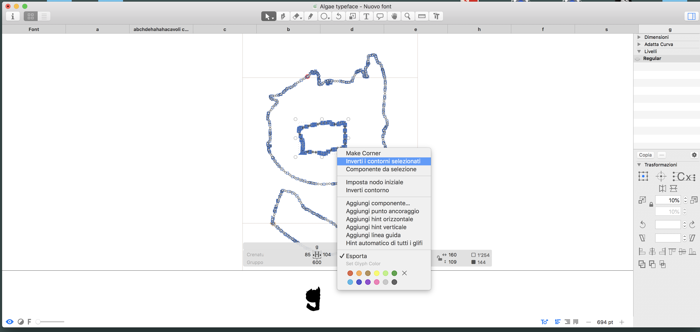
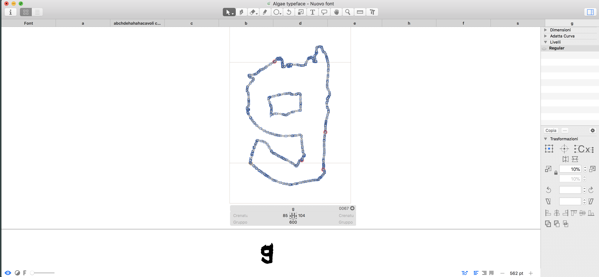
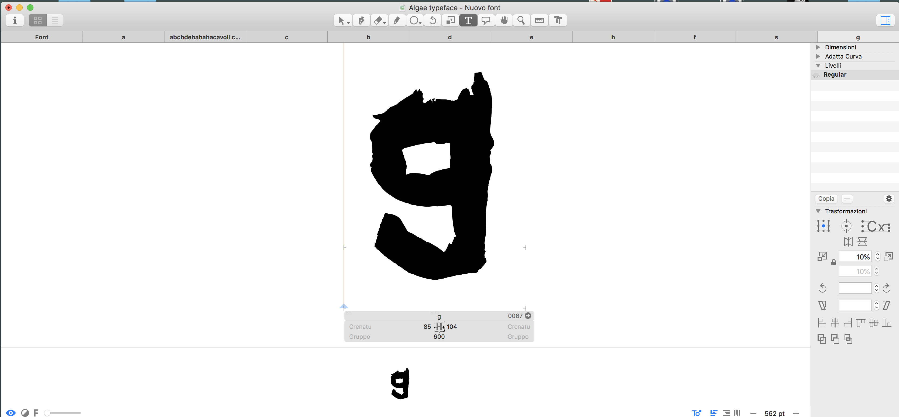
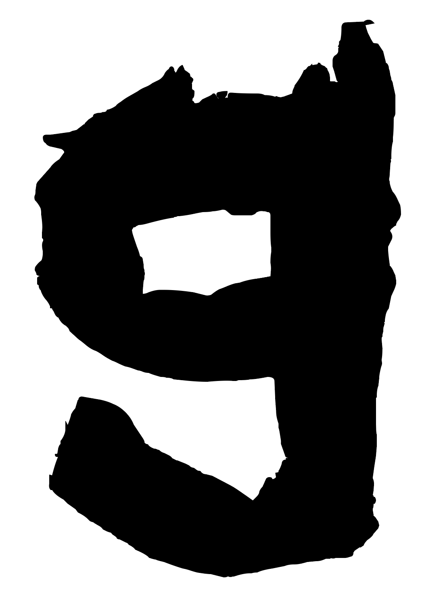

Instruction
Ingredients :
Seaweed / Bowl / A smooth and uniform surface / Phone / Illustrator / Glyphs

1. Prepare a bowl full of water and place all the elements on a table.

2. Dip a leaf of seaweed in the water.

3. Let it open naturally, eventually you can try to separate the leaves with your hands.

4. Arrange the leaves to form a letter and take a picture.

5. Open the photo on illustrator, vectorize it highlighting the outline, select with the white arrow only the outline. Reverse the selection and delete all that is not necessary.

6. When you have only your shape, copy it with the black arrow.

7. Paste the shape in glyphs and resize it to the right height. In case you have one shape inside the other you may not see them correctly. You have to select the inner path and reverse it.

8. You'll have obtained your letter from seaweed.

9. By holding down the space bar you can see your finished letter.

10. Final result.